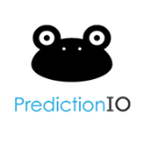

Estado del arte
Debido al auge de los sistemas de recomendación, es posible mostrar una larga lista de servicios que
utilizan este tipo de herramientas, a continuación se encuentran algunas muy relevantes. Cabe destacar
que muchas de ellas solo son un sistema de recomendación de código cerrado y no permiten reutilizar sus
funciones de esta forma para algún desarrollador que desee realizar una aplicación similar.
A contuniación se mencionaran algunos proyectos semejantes:
Spotify
- Fue desarrollado en el año 2008
- Es un software multiplataforma.
- Permite escuchar musica en modo radio buscando por artista,
álbum o listas de reproducción creadas por los propios usuarios
- Spotify hace uso de un sistema de recomendación
para mostrar canciones y listas de reproducción a sus usuarios
PredictionIO
- Proporciona los recursos necesarios para crear un
servidor de recomendaciones usando aprendizaje máquina
- Trabaja mediante una API REST
- Se comunica con las distintasaplicaciones clientes y va recolectando datos
para aplicar los más de 20 algoritmos de recomendaciones precargados
- Spotify hace uso de un sistema de recomendación
para mostrar canciones y listas de reproducción a sus usuarios

Easyrec
- Sistema de personalización de propósito general
- utiliza una API de servicio web actual
está personalizada para proporcionar tiendas en
línea con recomendaciones de artículos.
- Cabe mencionar que es una aplicación lista para usar,
no un framework algorítmico.
LensKit
- Desarrollado principalmente por la Universidad
del Estado de Texas y por GroupLens Research en
la Universidad de Minessota
- Es una API para desarrollo de sistemas de recomendación
- Funciona bajo algoritmos de recomendación para artículos y usuarios
para realizar las recomendaciones de los artículos.